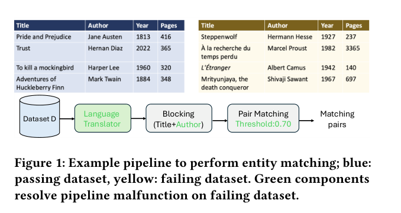
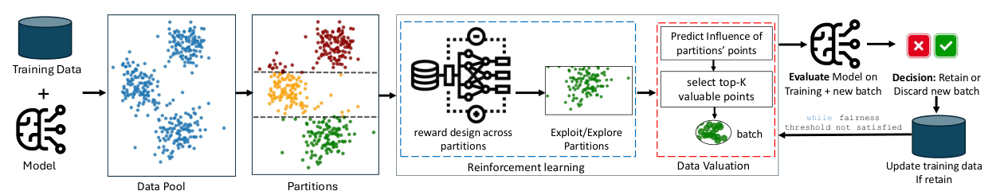
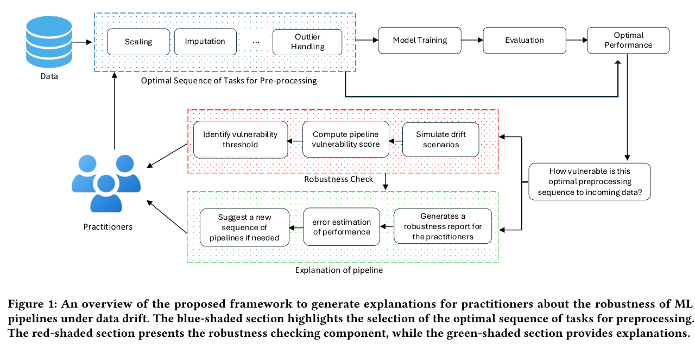

Selected Research
Making data science systems reliable from data to deployment
My research follows a machine learning system across its lifecycle: selecting useful training data, building dependable pipelines, diagnosing failures, and preparing those pipelines for changing deployment conditions. The projects below tell that story—from the problem each system addresses to the mechanism behind it and the practical outcome.
Agentic AI for Data Science Pipeline Debugging
Data science pipelines have many interconnected stages, so a local fix can easily create a new problem elsewhere. This work explores a coordinated team of specialized agents that can inspect, diagnose, and repair different stages while reasoning about the pipeline as one system.
Key ideas
- Assign specialized agents to data quality, component failure, and configuration diagnosis.
- Coordinate local recommendations so they improve global pipeline performance.
- Produce traceable repair decisions that practitioners can inspect before deployment.

PipeLens
Identifying interventions for resolving malfunctioning data science pipelines
A pipeline may work well on familiar data and then fail on a new dataset because its components silently rely on assumptions that no longer hold. PipeLens treats the complete pipeline—not just the final model—as the object of diagnosis and repair.
How it works
PipeLens represents a pipeline as a directed graph and tests causal interventions such as changing a parameter, inserting or deleting a component, or reordering modules. Data profiles and successful historical executions guide a learned proxy utility model toward promising repairs, reducing the need for exhaustive search.
Key contributions
- Finds causally verified repairs rather than reporting correlations with failure.
- Supports database, machine learning, and retrieval-augmented generation pipelines.
- Improves performance by 5–40% over Learn2Clean and BugDoc across evaluated tasks.

DataSift
Selective data expansion for model performance
More training data does not automatically produce a better or fairer model. DataSift asks a more useful question: which small subset of available data will improve fairness while preserving predictive performance?
How it works
The framework partitions an external data pool and uses a multi-armed bandit to learn which regions are most promising. Within a selected region, influence-based valuation prioritizes individual samples. A candidate batch is retained only when evaluation shows that it moves the model toward the desired fairness objective.
Key contributions
- Connects adaptive data acquisition with model fairness at an early pipeline stage.
- Resolves most unfairness using as little as 4% additional data in the reported experiments.
- Preserves accuracy, with at most a 2.6% decrease and gains as high as 27.4%.

Sentinel
Evaluating pipeline robustness under distributional shifts
Pipelines optimized on historical data can become brittle when incoming data changes. Sentinel helps practitioners assess that risk before a deployment failure by identifying which preprocessing stages are vulnerable, how much performance may decline, and what to change.
How it works
Sentinel simulates realistic covariate-shift scenarios, computes component- and pipeline-level vulnerability scores, and learns a lightweight mapping from vulnerability to expected performance loss. It then generates a readable robustness report and ranks compatible pipeline repairs.
Key contributions
- Turns abstract drift measures into component-level, practitioner-facing explanations.
- Identifies tolerable thresholds and predicts degradation before costly failures occur.
- In the paper’s demonstration, a suggested repair reduced observed loss from about 6% to 2% without full re-optimization.
FANSHIELD
Predictive obstacle assessment for outdoor extended reality
Immersive headsets can reduce awareness of nearby obstacles, especially while a user is moving outdoors. FANSHIELD shifts safety from reacting to a collision risk toward anticipating it.
Key ideas
- Uses headset, gaze, controller, and smart-eyewear motion signals as a unified movement context.
- Applies LSTM-based trajectory prediction to estimate where the user is likely to move next.
- Enables earlier, context-aware safety interventions for immersive environments.